Project Report

Introduction
Severe maternal morbidity (SMM) includes health outcomes during labor and delivery that may result in both short-term and/or long term health consequences for women. New York City’s rate of SMM increased 28.2 % from 2008 to 2012. Preterm births, when infants are born prior to 37 weeks of gestation, can place the mother at increased risk of physical and mental health complications as well as decreased bonding with the baby. Additionally, STI’s pose a general threat of infection to mothers and infants. Some of the factors contributing to high rates of SMM, preterm births, and STI’s in New York City include access to reproductive health services, health insurance coverage, neighborhood poverty level, education, and race. We will examine these factors that may contribute to the poor maternal health outcomes in New York City. In regards to STI’s in our assessment of reproductive health in NYC, we will choose to focus specifically on gonorrhea as it provides considerable risk to pregnant mothers and newborn babies and is among the most infectious of STI’s 1.
Additional background information regarding our outcomes of interest can be found in our About section under The Project.
Inspiration
The following resources are part of the inspiration behind this project:
- “Why America’s Black Mothers and Babies Are in a Life-or-Death Crisis.” New York Times. April 11, 2018.
- 2020 Maternal & Infant Health Summit hosted by Mayor Muriel Bowser’s Maternal & Infant Health Initiative. September 15-18, 2020.
Questions
Among neighborhoods in NYC…
Exploratory Analysis
- How does access to reproductive services impact maternal health and levels of STIs?
- How does insurance coverage affect maternal health and levels of STIs?
- How is the relationship between maternal & reproductive outcomes and access to healthcare affected by factors like neighborhood racial composition, poverty and education?
Neighborhood-Level Maps
- Spatial distributions of key demographic and socioeconomic predictors of maternal and reproductive among NYC neighborhoods
- Neighborhood clustering patterns to identify areas of particularly high or low risk
Regression Models
- How do maternal and reproductive health outcomes correlate with demographic, socioeconomic, and healthcare access factors?
- Can we build accurate estimation models to quantify the relationship between health outcomes and their potential protective & risk factors?
Note: our questions did not change over time, but they did become more granular as we dug deeper into our data.
Data
Source: NYC Neighborhood Health Atlas
Variables of interest
Outcomes:
preterm_births: percent preterm births (<37 weeks gestation) among all live births in 2010-2014smm: crude rate of severe maternal morbidity (SMM) per 10,000 deliveries in 2008-2012gonorrhea: crude rate of gonorrhea cases diagnosed per 100,000 people of all ages in 2014-2015
Potential Predictors:
total_pop: total populationfemale: percent of female population in 2010-2014foreign_born: percent of population born outside the US or US territorieslimited_eng: percent of population 5 years and older who report that they speak English “less than very well”unemployment: percent of the civilian (non-military) labor force ages 16 and older who are unemployed in 2010-2014health_ins: percent of civilian non-institutionalized population with health insurance in 2010-2014medicaid_enroll: percent of population continuously enrolled (for 11 months or more) in Medicaid in 2015late_no_prenatal_care: percent of live births receiving late prenatal care or no prenatal care at all in 2010-2014race: various race variables were re-categorized into a single variable with four categories: black, hispanic, white, and otherpoverty: percent of population all ages living below the federal poverty level. This variable was re-categorized into five levels during our exploratory analyses:education: percent of population ages 25 and older whose highest level of education is less than a high school diploma or GEDnon_pcmd: number of non-primary care providers in 2014clinics_and_chc_density: clinic & community health centers per 10,000 people in 2014non_pcmd_density: non-primary care providers (specialists like ob-gyns) per 10,000 people
Data Tidying
The following steps were taken to clean the NYC NTA data:
- Clean names to improve readability
- Select relevant predictors & outcomes (demographics, SES, health outcomes, insurance status, number of providers)
- Drop neighborhoods that have no residential population (i.e. LaGuardia airport)
- Drop observation representing NYC aggregated
- Remove variables corresponding to 95% CI and reliability metrics of measurements
- Create new variable
clinics_and_chc_countrepresenting aggregated clinic and community health centers to reduce multicollinearity - Create new variables adjusting number of healthcare providers by neighborhood population
clinics_and_chc_density: clinic & community health centers per 10,000 peoplenon_pcmd_density: non-primary care providers (specialists like ob-gyns) per 10,000 people
- Renamed variables for ease of reading
- Combined Asians into the ‘other’ race category
- Saved cleaned dataset to CSV to improve portability across users & programs
project_df = read_excel("./data/nta-metadata.xlsx", sheet = "NTA Data") %>%
janitor::clean_names() %>%
dplyr::select(
nta_name:female,
hispanic:limited_eng,
edu_less_than_hs:poverty,
unemployment,
preterm_births:smm_reliability,
gonorrhea,
health_ins,
medicaid_enroll,
late_no_prenatal_care,
clinics,
community_health_centers,
non_pcmd,
-contains("95cl"),
-contains("reliability")) %>%
mutate(clinics_and_chc_count = clinics + community_health_centers,
clinics_and_chc_density = ((clinics + community_health_centers)/total_pop)*10000,
non_pcmd_density = (non_pcmd/total_pop)*10000,
other = (asian_pi + other_race)) %>%
rename(
white = white_non_hisp,
black = black_non_hisp,
education = edu_less_than_hs) %>%
relocate(other, .after = black) %>%
select(-asian_pi, -other_race) %>%
drop_na(total_pop) %>%
filter(nta_code != 'NYC')
write.csv(project_df, 'data/clean_dataset.csv', row.names = FALSE)Our final dataset contained data from 188 neighborhoods in New York City, defined by Neighborhood Tabulation Areas (NTAs), which were generated from 2010 US Census data
Methods
In this section, we discuss the analyses we completed.
Exploratory Analysis
We used data visualizations to conduct some exploratory analysis of our outcomes and predictors to identify any preliminary trends. We approached this by separating the three primary outcomes (SMM, preterm births, and gonorrhea) and selected various predictors based on literature to further examine their relationships. In order to create the plots, we first took our clean data set and restructured the poverty and race predictors into categorical variables. Then, for each outcome we created scatter plots against predictors such as race, poverty, prenatal care, health insurance, medicaid enrollment, and education. For gonorrhea, we also investigated its relationship with education, stratified by race. Similarly, we investigated SMM and prenatal care, stratified by race.
plots_df = read_csv("./data/clean_dataset.csv") %>%
mutate(
poverty_level = cut(poverty, breaks = c(-Inf, 10, 20, 30, 40, Inf),
labels = c("poverty_10","poverty_20", "poverty_30", "poverty_40", "poverty_40+"))) %>%
pivot_longer(
cols = hispanic:other,
names_to = "race",
values_to = "percent_pop",
values_drop_na = TRUE
) Neighborhood-Level Maps
We used Geographic Information System(GIS) to join our two datasets, overlaying the NYC Neighborhood Health Atlas data to the NTA shapefile. Using QGIS, we created several maps portraying the distribution of our outcomes and hypothesized predictors, the darker colors representing higher rates. Our interactive web map allows us to assess each outcome individually and clearly see high(darker colors) and low(lighter colors) rates.The points for Neighborhood Tabulation Area provides us with an overall summary of Percent of Black-identifying population, percent in poverty and the crude rate of SMM. We used Local Indicators of Spatial Association(LISA) Clusters within GeoDA, which allowed us to map the categorization of significant spatial clusters. The high cluster areas represent NTAs with statistically significant clusters of high SMM rates and the low cluster areas represent NTAs with statistically significant clusters of low SMM rates. Cluster analysis allowed us to visually check for an association between our predictors and outcome SMM.
Regression Models
Severe Maternal Morbidity
Linear Regression Model
We fit a linear model to the severe maternal morbidity outcome using our stepwise AIC automatic feature selection algorithm. Next, we’ll take a look at the chosen predictors, effect measures, and run regression diagnostics.
#Combined predictors with SMM outcome
predictor_df = read.csv("./data/predictors.csv")
outcome_df = read.csv("./data/outcomes.csv")
smm_df = predictor_df %>%
mutate(smm = outcome_df$smm)
#Fit the full model
full_smm_linear.model <- lm(smm~., data = smm_df)
#Stepwise regression model
step_smm_linear.model <- stepAIC(full_smm_linear.model, direction = "both",
trace = FALSE)
#Display converged model
step_smm_linear.model %>%
broom::tidy() %>%
knitr::kable(digits = 3)The variables female, hispanic, white, black, foreign_born, limited_eng, education, unemployment, late_no_prenatal_care, and clinics_and_chc_density were chosen in the final model. The model has an R-squared value of 0.7602807, representing a reasonably good fit.
However, we were concerned about our assumptions for linear regression, so they need to be checked before we can interpret any results.
#Regression diagnostics
plot(step_smm_linear.model)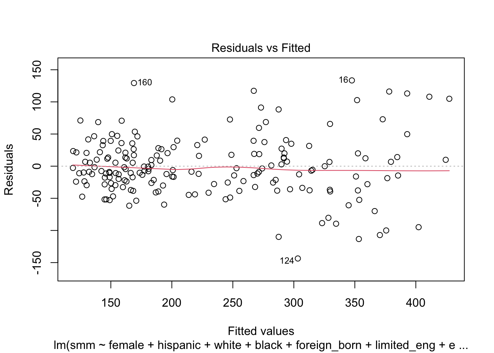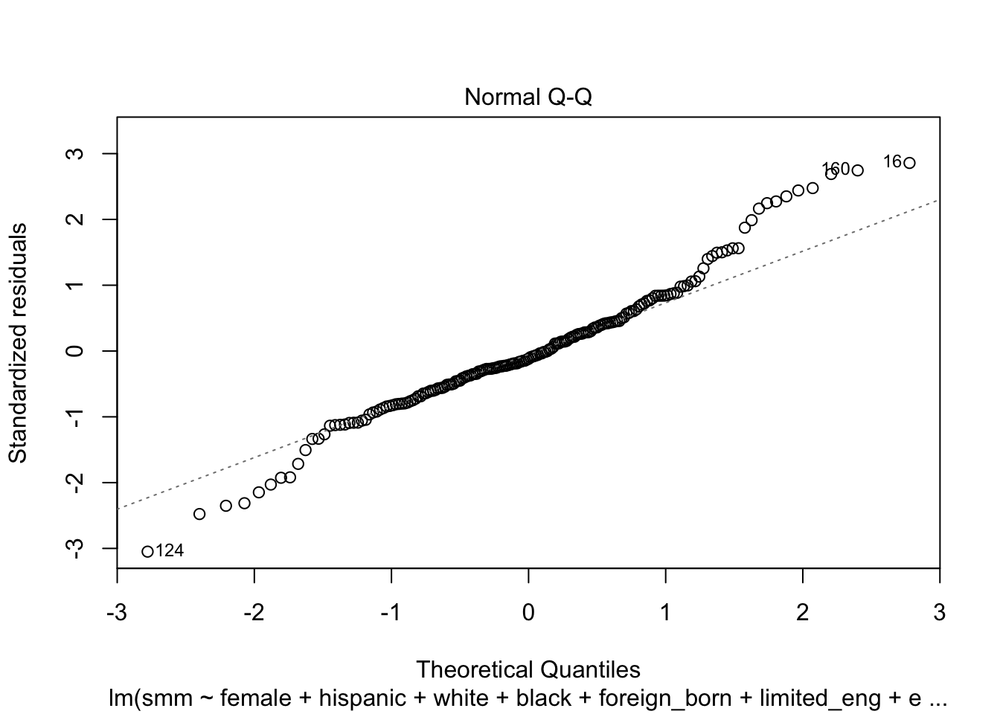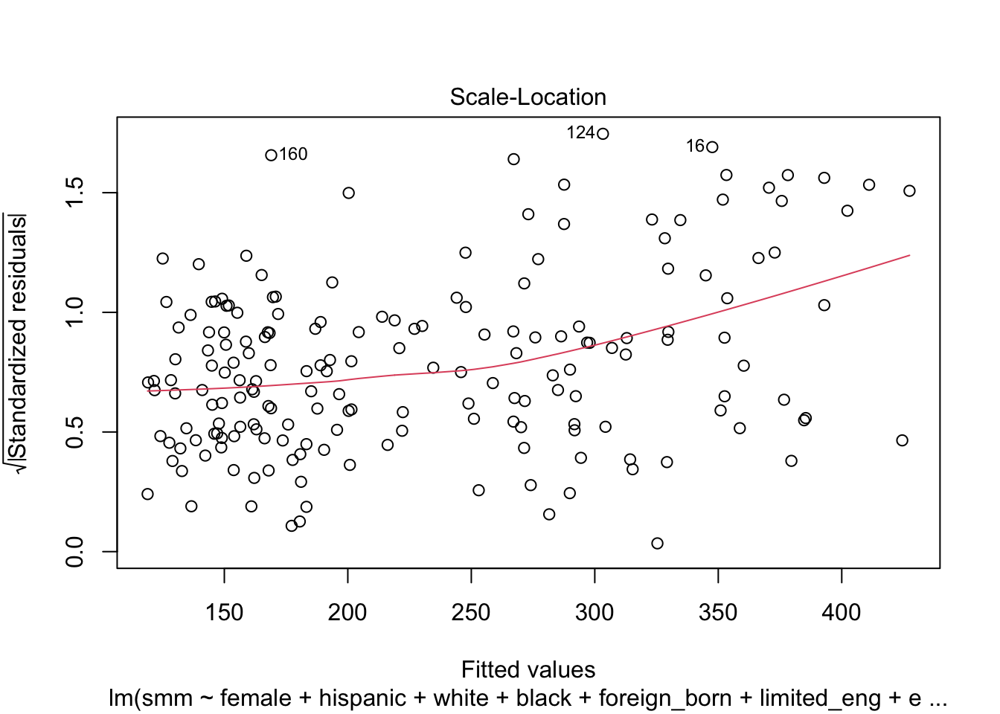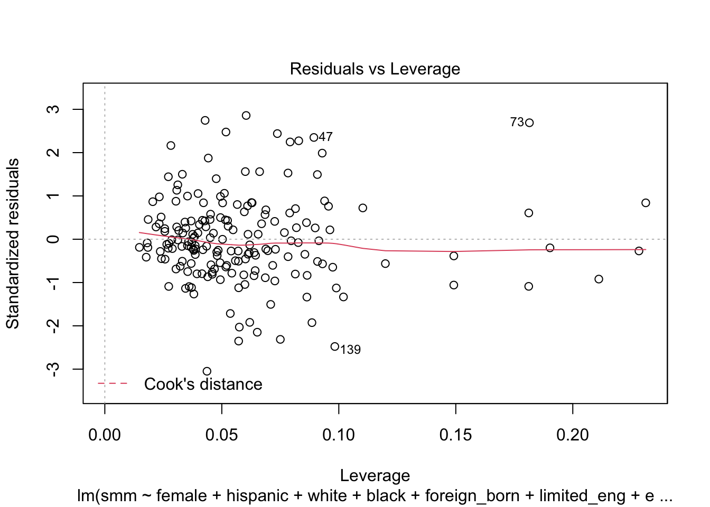
#Shapiro test
smm_linear_shapiro = shapiro.test(residuals(step_smm_linear.model))The Normal Q-Q plot has fat tails, suggesting violation of the normality assumption. This is confirmed with the Shapiro-Wilk test for normality, which has a p-value of 0.0019526. The plot of residuals vs fitted values is non-random, suggesting a violation of the homoskedasticity assumption, also indicated by the scale-location plot, where the line is not straight. There’s also an unequal distribution of leverage among points (though likely not significant), and a few potential outliers.
It’s possible that the model is still valid - let’s try something else though!
Poisson Regression Model
Because our outcome variable, severe maternal morbidity rate is really a count variable (number of cases) made into a rate by dividing by total population (another variable in our dataset), we can fit Poisson regression to model the outcome.
full_smm_poisson.model <- glm(smm~., data=smm_df, family=poisson(link = "log"))
step_smm_poisson.model <- stepAIC(full_smm_poisson.model, direction = "both",
trace = FALSE)
#Display converged model
step_smm_poisson.model %>%
broom::tidy() %>%
knitr::kable(digits = 3)Our Poisson model failed to converge, which is why it appears all predictors were selected in the final model. A closer look at the regression output shows that this is because the model is overdispersed, violating one of the key assumptions of Poisson regression.
Negative Binomial Regression Model
To address that, we will use a negative binomial model, an expansion on the Poisson model that adds a dispersion parameter alpha that can account for overdispersion.
full_smm_neg_bin.model <- glm.nb(smm~., data=smm_df)
step_smm_neg_bin.model <- stepAIC(full_smm_neg_bin.model, direction = "both",
trace = FALSE)
#Display converged model
step_smm_neg_bin.model %>%
broom::tidy() %>%
knitr::kable(digits = 3)The negative binomial model selection process has yielded a more parsimonious set of predictors, including 8 predictors: hispanic, white, other, foreign_born, unemployment, medicaid_enroll, late_no_prenatal_care and clinics_and_chc_density.
This model is more parsimonious, and satisfies assumptions, which is not necessarily true for the linear and Poisson models. Let’s compare the three models we’ve already built, and just for kicks, a negative binomial regression with variables selected through literature review & causal theory.
The predictors we’ll use in our model are: late_no_prenatal_care, clinics_and_chc_density, medicaid_enroll, hispanic percent population, and black percent population.
theory_smm_neg_bin.model <- glm.nb(smm~ late_no_prenatal_care + clinics_and_chc_density + medicaid_enroll + hispanic + black, data=smm_df)
#Display converged model
theory_smm_neg_bin.model %>%
broom::tidy() %>%
knitr::kable(digits = 3)Let’s compare all four models using AIC and discuss the implications of these values.
- Linear: AIC = 1950.0754887
- Poisson: AIC = Inf
- Negative binomial: AIC = 1908.2102369
- Our model: AIC = 1916.7557983
Though the automatically generated negative binomial model has the lowest AIC and is therefore the “winning” model, it’s important to note that our curated model is not far behind. Our curated model is also more parsimonious, contains fewer highly correlated predictors, and fits well with the existing body of literature on severe maternal morbidity, all of which are benefits difficult to quantify with a metric like AIC.
Discussion
Because of correlation between many predictors, we should assess for multicollinearity in our fitted model using condition indexes and a variance decomposition matrix.
smm_coll = colldiag(step_smm_neg_bin.model)
knitr::kable(list(smm_coll$condindx, smm_coll$pi))As we suspected, there is some degree of collinearity in our model, indicated by condition indices between 10 and 30. However, it is not extreme and seems to be strongly related to the predictor of white population proportion. We will be careful not to interpret that predictor independently.
As a result, we can safely say that a model containing hispanic, white, other, foreign_born, unemployment, medicaid_enroll, late_no_prenatal_care and clinics_and_chc_density is the best set of predictors for neighborhood-level severe maternal morbidity.
Preterm Births
Let’s start by fitting a linear model to the preterm births outcome using a stepwise selection process (with AIC as metric). Next, we’ll take a look at the chosen predictors, effect measures, and run regression diagnostics of our converged model.
#read in cleaned csv files
predictors_df = read.csv("./data/predictors.csv")
outcome_df = read.csv("./data/outcomes.csv")
#Combined predictors with preterm births outcome
preterm_linear_df = predictors_df %>%
mutate(preterm_births = outcome_df$preterm_births)
#Fit the full model
full_preterm_linear.model <- lm(preterm_births~., data = preterm_linear_df)
#Stepwise regression model
step_preterm_linear.model <- stepAIC(full_preterm_linear.model, direction = "both",
trace = FALSE)
#Display converged model
step_preterm_linear.model %>%
broom::tidy() %>%
knitr::kable(digits = 3)The 6 variables hispanic, black, limited_eng, health_ins, late_no_prenatal_care, and non_pcmd_density were chosen in the final model. The model has an R-squared value of 0.6461531, representing a decent fit. This is unsurprisingly given the complex web of factors that contribute to high preterm birth rates.
However, we were concerned about our assumptions for linear regression, so they need to be checked before we can interpret any results.
#Regression diagnostics
plot(step_preterm_linear.model)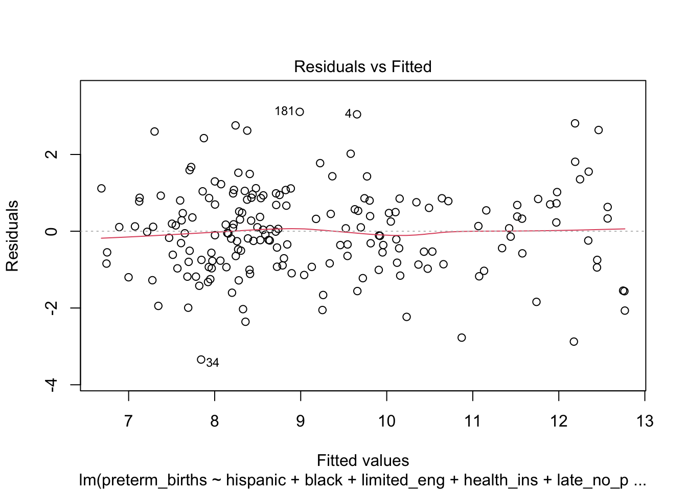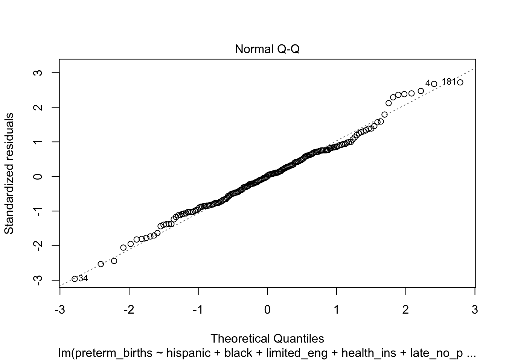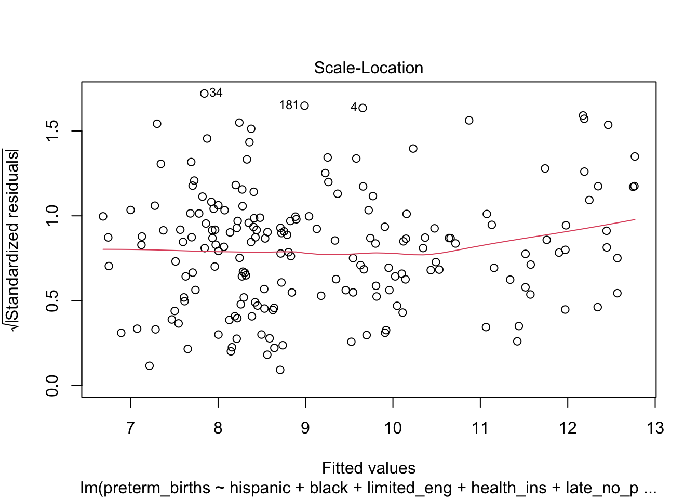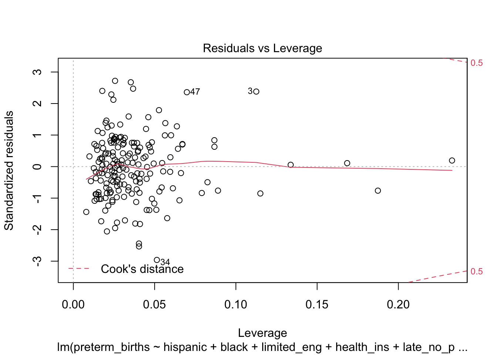
#Shapiro test
preterm_linear_shapiro = shapiro.test(residuals(step_preterm_linear.model))The linear regression assumptions are satisfied, so this is a valid model. The Normal Q-Q plot is reasonably well fit, and Shapiro-Wilk test for normality, which has a p-value of 0.2584184, confirms the normality assumption. The data also roughly follows the homoskedasticity assumption, with a few potential outliers right at 3 standard deviations and potential influential points. Though several point has high leverage, it is not higher than our rule-of-thumb threshold of 0.074. This is calculated using the rule of thumb equation 2(p + 1)/n, where p is the number of predictors and n the number of observations.
These results are valid, so we can interpret them! Because we prioritize simple intuitive models, we’ll use our valid linear regression model.
Discussion
Our final model consists of the 6 predictors hispanic, black, limited_eng, health_ins, late_no_prenatal_care, and non_pcmd_density.
Because of correlation between many predictors, we should assess for multicollinearity in our fitted model using condition indexes and a variance decomposition matrix.
preterm_coll = colldiag(step_preterm_linear.model)
knitr::kable(list(preterm_coll$condindx, preterm_coll$pi))As we suspected, there is some collinearity indicated by a single high condition index and unsurprisingly given the correlation matrix we visualized between predictors. However, nearly all of the variation seems to be attributed to the health insurance predictor, with no two predictors having high variance in the corresponding variance decomposition matrix row.
We’ll table that variable for now, but note that as we suspected, prenatal care and health insurance status are strongly related to rates of preterm births in NYC neighborhoods, controlling for minority population proportions.
Gonorrhea
Linear Regression Model
Let’s start by fitting a linear model to the gonorrhea outcome variable using our stepwise selection process with AIC. The chosen predictors are indicated in the table below.
predictors_df = read.csv("./data/predictors.csv")
outcome_df = read.csv("./data/outcomes.csv")
#Combined predictors with SMM outcome
gonorrhea_df = predictors_df %>%
mutate(gonorrhea = outcome_df$gonorrhea) %>%
dplyr::select(-total_pop)
#Fit the full model
full_gonorrhea_linear.model <- lm(gonorrhea~., data = gonorrhea_df)
#Stepwise regression model
step_gonorrhea_linear.model <- stepAIC(full_gonorrhea_linear.model, direction = "both",
trace = FALSE)
#Display converged model
step_gonorrhea_linear.model %>%
broom::tidy() %>%
knitr::kable(digits = 3)The variables female, hispanic, black, other, limited_eng, education, poverty, medicaid_enroll, late_no_prenatal_care, and clinics_and_chc_density were chosen in the final model. The model has an R-squared value of 0.476492, representing a reasonably good fit.
However, we were concerned about our assumptions for linear regression, so they need to be checked before we can interpret any results.
#Regression diagnostics
plot(step_gonorrhea_linear.model)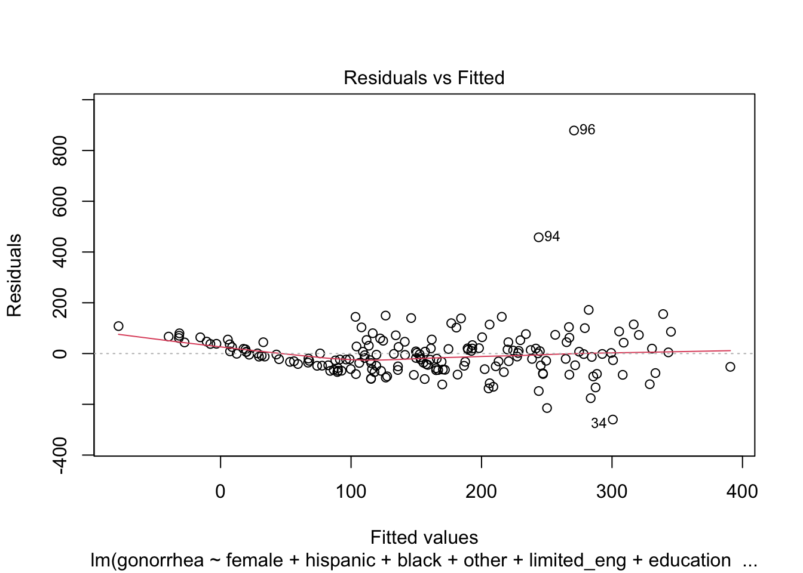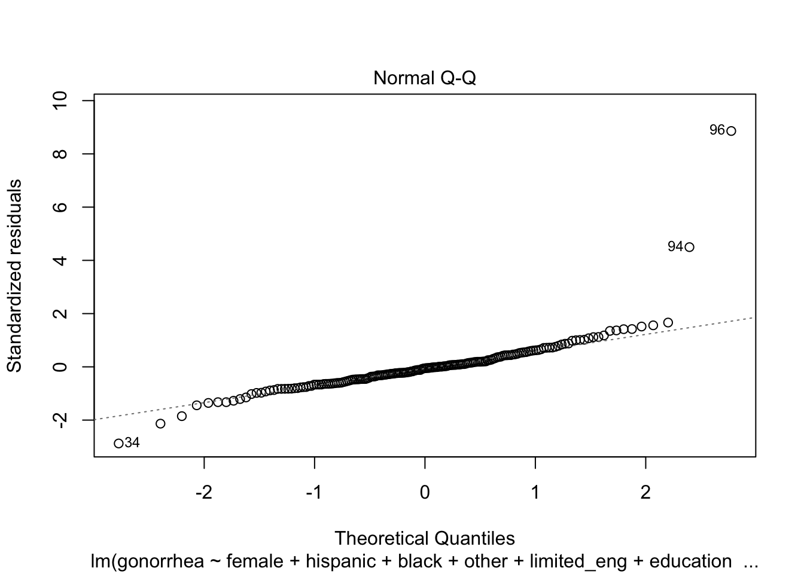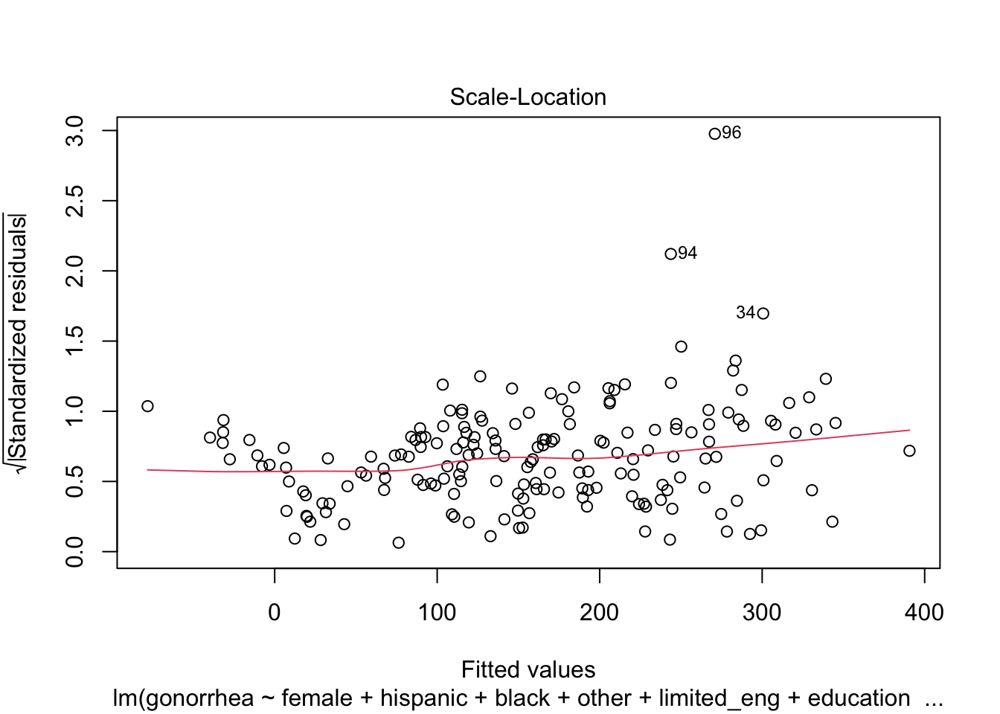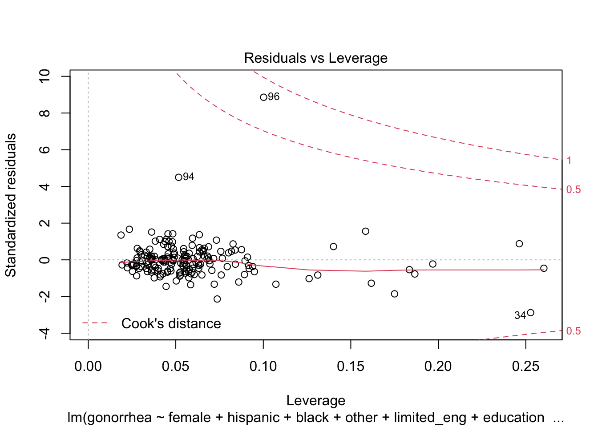
#Shapiro test
gonorrhea_linear_shapiro = shapiro.test(residuals(step_gonorrhea_linear.model))The Normal Q-Q plot has fat tails, suggesting violation of the normality assumption. This is confirmed with the Shapiro-Wilk test for normality, which has a p-value of 5.697824910^{-17}. The plot of residuals vs fitted values has non-random variance, suggesting a violation of the homoskedasticity assumption, also indicated by the scale-location plot, where the line is not straight.
We’ll stop this analysis here since it’s clear the model doesn’t follow linear assumptions, but it’s important to note that further analysis would also have to investigate the potential outliers & high leverage points found in the residuals vs. leverage plot.
A quick look at the dataset shows that both these data points, corresponding to the neighborhoods of Clinton (Hell’s Kitchen) and Hudson Yards-Chelsea-Flat Iron-Union Square possess the highest and second highest rates of gonorrhea, respectively. These numbers are at odds with their majority white, affluent, and well-educated residents. We posit it may be because they have high LGBTQ+ populations - prior research suggests that MSM (men who have sex with men) are at much higher risk of STDs than women or heterosexual men.
Poisson Regression Model
Because our outcome variable, gonorrhea rate is really a count variable (number of cases) made into a rate by dividing by total population (another variable in our dataset), we could run a Poisson regression to model the outcome. Running a Poisson model on gonorrhea case rate approximates fitting a Poisson regression on a gonorrhea count variable, using neighborhood population as an offset.
full_gonorrhea_poisson.model <- glm(gonorrhea~., data=gonorrhea_df, family=poisson(link = "log"))
step_gonorrhea_poisson.model <- stepAIC(full_gonorrhea_poisson.model, direction = "both",
trace = FALSE)#Display converged model
step_gonorrhea_poisson.model %>%
broom::tidy() %>%
knitr::kable(digits = 3)Our Poisson model selected 15 predictors in the converged model, suggesting that model is not as well-specified as we would like. This is further indicated by the high dispersion of the model (calculated as deviance/df). A key assumption of Poisson model is that the conditional mean must equal the conditional variance. A dispersion value close to 1 shows the assumption is met, but the dispersion in our model is 45.940339, which indicates that our model is overdispersed.
Negative Binomial Regression Model
There are several ways to address overdispersion in Poisson models, but for our purposes we will use a negative binomial model, an expansion on the Poisson model that adds a dispersion parameter alpha to account for either over or underdispersion.
full_gonorrhea_neg_bin.model <- glm.nb(gonorrhea~., data=gonorrhea_df)
step_gonorrhea_neg_bin.model <- stepAIC(full_gonorrhea_neg_bin.model, direction = "both",
trace = FALSE)
#Display converged model
step_gonorrhea_neg_bin.model %>%
broom::tidy() %>%
knitr::kable(digits = 3)The negative binomial model selection process has yielded a more parsimonious set of predictors, including 8 predictors: female, hispanic, black, other, limited_eng, education, poverty, medicaid_enroll, late_no_prenatal_care and non_pcmd_density.
This is much better! The model is more parsimonious, and satisfies assumptions, which is not necessarily true for the linear and Poisson models. Let’s compare the three models using AIC:
- Linear: AIC = 2209.5396526
- Poisson: AIC = Inf
- Negative binomial: AIC = 2027.4706595
The negative binomial model is slightly better than the linear model, and both the linear and negative binomial models are much better than the Poisson model. Since we’ve established AIC as our criteria, we’ll use the negative binomial model as our final model moving forward.
Discussion
Our final model shows that female, hispanic, black, other, limited_eng, education, poverty, medicaid_enroll, late_no_prenatal_care and non_pcmd_density are important predictors of gonorrhea rates by neighborhood.
We should assess for multicollinearity in our fitted model using condition indexes and a variance decomposition matrix.
gonorrhea_coll = colldiag(step_gonorrhea_neg_bin.model)
knitr::kable(list(gonorrhea_coll$condindx, gonorrhea_coll$pi))Though some of our condition indices are very very large, it is difficult to identify exactly which predictors are contributing to this multicollinearity from the variance decomposition matrix. It appears that poverty and medicaid enrollment, as well as hispanic and education, may be collinear pairs in this model. Though this is not ideal, it does not detract from the results of our regression if we leave them together in the model as control variables.
Results & Discussion
These exploratory visualizations demonstrate the importance of access to care and socioeconomic factors to the health of mothers. From our exploratory analyses, we found that poverty and late or no access to prenatal care are strong predictors of our outcomes, with direct, positive relationships. These results are supported by our negative binomial regression analysis that found statistically significant p-values for the variables of late or no prenatal care and poverty. Race appears to modify the relationship between prenatal care access and SMM. Among populations with greater percent of Hispanic and Black individuals, there were higher rates of SMM as the percentage of low or no prenatal care rose. However, among populations with greater percent of White individuals, levels of late or no prenatal access and SMM were both low. These observations are supported by our negative binomial regression modeling which found statistically significant, direct associations between the race variables of Hispanic and Black populations and SMM, while the association between the variable of White population and SMM was negative. These findings support our literature review findings, highlighting the importance of access to care, income level, and race on health outcomes.
poverty2_smm_ggplot =
plots_df %>%
ggplot(aes(x = poverty_level, y = smm)) +
geom_boxplot() +
labs(
title = "Poverty Levels and Maternal Morbidity in NYC Neighborhoods",
x = "Grouped percentage population below federal poverty level",
y = "Rate of SMM per 10,000 deliveries")
ggplotly(poverty2_smm_ggplot)
prenatal_care_ggplot =
plots_df %>%
ggplot(aes(x = late_no_prenatal_care, y = preterm_births, group = nta_name)) +
geom_point(color = "blue") +
labs(
title = "Access to Prenatal Care and Preterm Births in NYC Neighborhoods",
x = "Percent live births recieving late or no prenatal care",
y = "Percent preterm births among all live births")
ggplotly(prenatal_care_ggplot)While health insurance coverage did not appear to be a strong predictor of preterm births or gonorrhea, the rate of Medicaid enrollment was positively associated with these outcomes. We speculate that those covered by private insurance tend to be healthier and wealthier than those insured by Medicaid, potentially predisposing Medicaid enrollees to worse health outcomes. Another potential reason for the discrepancy between health insurance types is the consequences of cost-sharing. Patients under plans with greater cost-sharing and higher deductibles tend to seek lower amounts of necessary care, which would create negative consequences for those who are poor and sick. This postulation may also help explain the strong influence of the predictor late or no access to prenatal care upon the outcomes of SMM and preterm births. Pregnant mothers who experience poverty, bear more out-of-pocket prenatal care costs, and are in need of healthcare may receive crucial prenatal care belatedly or forgo it altogether, resulting in higher rates of SMM and preterm births.
gonorrhea1_ggplot =
plots_df %>%
ggplot(aes(x = health_ins, y = gonorrhea, group = nta_name)) +
geom_point(color = "green") +
labs(
title = "Health Insurance and Gonorrhea in NYC Neighborhoods (2014-2015)",
x = "Percent population with health insurance",
y = "Rate of gonorrhea cases per 100,000 people")
ggplotly(gonorrhea1_ggplot)
gonorrhea2_ggplot =
plots_df %>%
ggplot(aes(x = medicaid_enroll, y = gonorrhea, group = nta_name)) +
geom_point(color = "green") +
labs(
title = "Medicaid Enrollment and Gonorrhea in NYC Neighborhoods (2014-2015)",
x = "Percent population enrolled in Medicaid",
y = "Rate of gonorrhea cases per 100,000 people")
ggplotly(gonorrhea2_ggplot)We hypothesized that education would be a significant predictor of STI levels, specifically gonorrhea, which was our STI focus. From previous understanding and literature review, individuals with higher levels of education tend to practice safer sex methods and develop lower rates of STIs. Following that reasoning, we expected to see a strong association between the percentage of population with less than high school education and the rate of gonorrhea, where neighborhoods with higher percentages of the population with low education levels would see higher rates of gonorrhea. While a small, positive relationship between the variables does exist, it is a much weaker association than expected, with numerous outliers. We speculate that this weak association may be caused by the tendency of sexual education being taught at the middle school level and that the amount of safe sex practice knowledge may not be as different as we expected between the less-than-high-school level of education and higher education. Additionally, we hypothesize that the outliers of low percent of less-than-high-school education but high gonorrhea rates may be influenced by the large number of LGBTQ+ residents in those neighborhoods. We do not want to make assumptions about these marginalized communities who already experience a heavy burden from stigmatization. But in an attempt to understand potential causes for these data points, we will draw some tentative connections. From subsequent literature review, we have seen that people identifying as LGBTQ+ have higher rates of STI’s, whether as a result of lower condom usage following increased use of pre-exposure prophylaxis (PrEP) or due to a general, greater willingness to receive STI testing. This may artificially inflate the rate of gonorrhea in these neighborhoods since we have not tested and controlled for the variation of STI testing among different neighborhoods. Furthermore, we found that when stratifying the relationship between education and gonorrhea by race, there was a similar output to when we stratified the relationship between prenatal care and SMM. Populations with higher percent of Hispanic and Black individuals demonstrated higher levels of gonorrhea compared to populations with higher percent of White individuals. These findings were supported by the inclusion of Hispanic and Black race variables in the final fitted negative binomial regression model.
Our analyses show that significant disparities in reproductive and maternal health outcomes still remain among NYC neighborhoods, and they are highly correlated with sociodemographic characteristics. Public health interventions in this field are exceedingly necessary, especially given shifts in current events.
gonorrhea3_ggplot =
plots_df %>%
ggplot(aes(x = education, y = gonorrhea, group = nta_name)) +
geom_point(color = "green") +
labs(
title = "Education Level and Gonorrhea in NYC Neighborhoods (2014-2015)",
x = "Percent population with less than high school education",
y = "Rate of gonorrhea cases per 100,000 people")
ggplotly(gonorrhea3_ggplot)Acknowledgements
Special thanks to:
- Professor Qixuan Chen & Dr. Dan Liao for their statistics expertise
- Dr. Jeremy Porter for his advice on geospatial information systems (GIS)
- Jeff and the P8105 course staff (with special thanks to our TA, Junxian Chen) for showing us the endless possibilities of R
- The extraordinary, powerful, nasty women who inspire us every day
Ayeshra Acharya, Zaynub Ibrahim, Cynthia Liu, Shelley Shen
Data visualizations and analyses performed using RStudio (v1.3.1093-1) and QGIS (v3.16 1 'Hannover').
Interaction added to visualizations with plotly (v1.55.2).